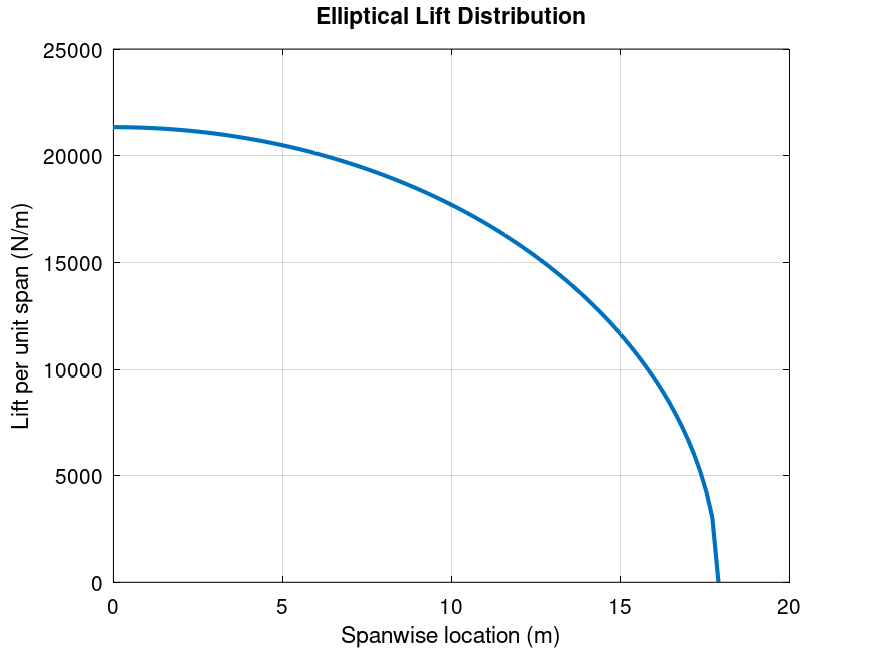
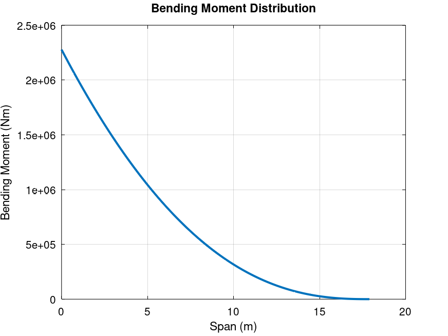
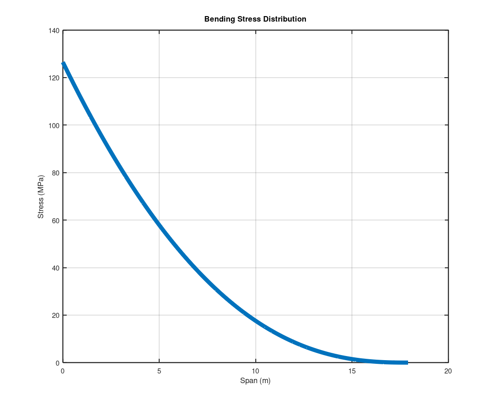

Independent project | Structures
A320 Wing Load Distribution Analysis
Structural model of a tapered transport aircraft wing, evaluating how aerodynamic loading translates into shear force, bending moment, and bending stress across the semi-span.
Problem
Determine the structural response of a semi-span A320-class wing under aerodynamic loading, including internal loads and bending stress distribution, then assess whether the simplified structure carries the selected steady flight load case.
Approach
- Applied an elliptical lift distribution as an efficient aerodynamic loading assumption.
- Discretised the semi-span into 100 stations for numerical evaluation.
- Computed shear force and bending moment using trapezoidal numerical integration.
- Modelled spanwise-varying chord and stiffness for the tapered wing geometry.
- Calculated bending stress using Euler-Bernoulli beam theory.
Results
Analysis Visuals




Engineering Insight
Peak bending stress occurs at the wing root because bending moment is highest there. Stress reduces towards the tip as internal load decreases and the tapered geometry reduces outboard demand, reflecting why real aircraft wing structures concentrate material near the root.
Design Drivers
- Thickness-to-chord ratio strongly affects stiffness because bending stiffness scales with section depth.
- Spar width influences stiffness, but less aggressively than depth.
- Load magnitude directly scales stress and drives root sizing.
- Taper ratio improves distribution and reduces outboard structural demand.
Limitations
- No torsional or aeroelastic effects included.
- Simplified single-spar structural model.
- No discrete engine, fuel, or structural weight loads included.
- Linear material behaviour assumed.